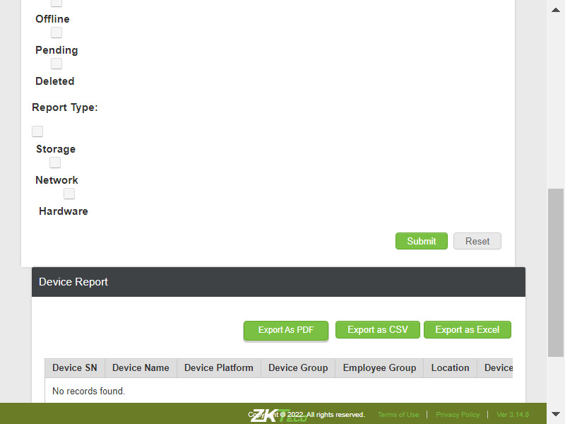

-
DeviceOperationandAudit Module
0h 2m 35s+742ms
12:48:10 pmDeviceOperationandAudit Module
01.03.2023 12:48:10 01.03.2023 12:50:46 0h 2m 35s+742ms@CirrusDCSTC_79: Verify whether user is able to navigate to Device Report pagecom.zkteco.cirrusdcs.stepDefinitions.CirrusDCS.i_initialize_drivers_for_DCS_automation()Driver InitializedGiven I visit CirrusDCS HostLogin pageGiven I am in HostAdmin home pageWhen I perform mousehower on Device operation & AuditAnd I click on Device Report sub moduleThen I validate user navigation to device report pageTC_80: Verify whether user is able to view below mentioned sections in device Report pagecom.zkteco.cirrusdcs.stepDefinitions.CirrusDCS.i_initialize_drivers_for_DCS_automation()Driver InitializedGiven I visit CirrusDCS HostLogin pageGiven I am in HostAdmin home pageWhen I perform mousehower on Device operation & AuditAnd I click on Device Report sub moduleThen I validate the sections present in the device report pageTC_81: Verify whether user is able to view below mentioned components in device reports sectioncom.zkteco.cirrusdcs.stepDefinitions.CirrusDCS.i_initialize_drivers_for_DCS_automation()Driver InitializedGiven I visit CirrusDCS HostLogin pageGiven I am in HostAdmin home pageWhen I perform mousehower on Device operation & AuditAnd I click on Device Report sub moduleThen I validate the components in device reports page sectionTC_82: Verify whether user is able to view below mentioned components in device report sectioncom.zkteco.cirrusdcs.stepDefinitions.CirrusDCS.i_initialize_drivers_for_DCS_automation()Driver InitializedGiven I visit CirrusDCS HostLogin pageGiven I am in HostAdmin home pageWhen I perform mousehower on Device operation & AuditAnd I click on Device Report sub moduleThen I validate the components in device report page sectionTC_83: Verify whether user is able to view below mentioned components in device report sectioncom.zkteco.cirrusdcs.stepDefinitions.CirrusDCS.i_initialize_drivers_for_DCS_automation()Driver InitializedGiven I visit CirrusDCS HostLogin pageGiven I am in HostAdmin home pageWhen I perform mousehower on Device operation & AuditAnd I click on Device Report sub moduleThen I validate the table columnscom.zkteco.cirrusdcs.stepDefinitions.CirrusDCS.teardown(io.cucumber.java.Scenario)TC_84: Verify whether user is able to filter the data by clientcom.zkteco.cirrusdcs.stepDefinitions.CirrusDCS.i_initialize_drivers_for_DCS_automation()Driver InitializedGiven I visit CirrusDCS HostLogin pageGiven I am in HostAdmin home pageWhen I perform mousehower on Device operation & AuditAnd I click on Device Report sub moduleThen I filter the data by clientThen I click on submit buttonThen I validate the search results in reportsTC_85: Verify whether user is able to filter the data by Device Sncom.zkteco.cirrusdcs.stepDefinitions.CirrusDCS.i_initialize_drivers_for_DCS_automation()Driver InitializedGiven I visit CirrusDCS HostLogin pageGiven I am in HostAdmin home pageWhen I perform mousehower on Device operation & AuditAnd I click on Device Report sub moduleThen I filter the data by clientThen I enter devicesn for filtering in reportsThen I click on submit buttonThen I validate the search results in reports for device snTC_86: Verify whether user is able to filter the data by Device namecom.zkteco.cirrusdcs.stepDefinitions.CirrusDCS.i_initialize_drivers_for_DCS_automation()Driver InitializedGiven I visit CirrusDCS HostLogin pageGiven I am in HostAdmin home pageWhen I perform mousehower on Device operation & AuditAnd I click on Device Report sub moduleThen I filter the data by clientThen I enter devicename for filtering in reportsThen I click on submit buttonThen I validate the search results in reports for device nameTC_87: Verify whether user is able to filter the data by locationcom.zkteco.cirrusdcs.stepDefinitions.CirrusDCS.i_initialize_drivers_for_DCS_automation()Driver InitializedGiven I visit CirrusDCS HostLogin pageGiven I am in HostAdmin home pageWhen I perform mousehower on Device operation & AuditAnd I click on Device Report sub moduleThen I filter the data by clientThen I enter location for filtering in reportsThen I click on submit buttonThen I validate the search results in reports for locationTC_88: Verify whether user is able to filter the data by device groupcom.zkteco.cirrusdcs.stepDefinitions.CirrusDCS.i_initialize_drivers_for_DCS_automation()Driver InitializedGiven I visit CirrusDCS HostLogin pageGiven I am in HostAdmin home pageWhen I perform mousehower on Device operation & AuditAnd I click on Device Report sub moduleThen I filter the data by clientThen I enter group name for filtering in reportsThen I click on submit buttonThen I validate the search results in reports for devicegroupTC_89: Verify whether user is able to filter the data by Device Platformcom.zkteco.cirrusdcs.stepDefinitions.CirrusDCS.i_initialize_drivers_for_DCS_automation()Driver InitializedGiven I visit CirrusDCS HostLogin pageGiven I am in HostAdmin home pageWhen I perform mousehower on Device operation & AuditAnd I click on Device Report sub moduleThen I filter the data by clientThen I enter device platformThen I click on submit buttonThen I validate the search results in reports for platformTC_90: Verify whether user is able to filter online devicescom.zkteco.cirrusdcs.stepDefinitions.CirrusDCS.i_initialize_drivers_for_DCS_automation()Driver InitializedGiven I visit CirrusDCS HostLogin pageGiven I am in HostAdmin home pageWhen I perform mousehower on Device operation & AuditAnd I click on Device Report sub moduleThen I filter the data by clientThen I click on online status check boxThen I click on submit buttonThen I validate the search results for device statusTC_91: Verify whether user is able to filter offline devicescom.zkteco.cirrusdcs.stepDefinitions.CirrusDCS.i_initialize_drivers_for_DCS_automation()Driver InitializedGiven I visit CirrusDCS HostLogin pageGiven I am in HostAdmin home pageWhen I perform mousehower on Device operation & AuditAnd I click on Device Report sub moduleThen I filter the data by clientThen I click on offline status check box in reportsThen I click on submit buttonThen I validate the search results for device statusTC_92: Verify whether user is able to filter pending devicescom.zkteco.cirrusdcs.stepDefinitions.CirrusDCS.i_initialize_drivers_for_DCS_automation()Driver InitializedGiven I visit CirrusDCS HostLogin pageGiven I am in HostAdmin home pageWhen I perform mousehower on Device operation & AuditAnd I click on Device Report sub moduleThen I filter the data by clientThen I click on pending status check box in reportsThen I click on submit buttonThen I validate the search results for device statusTC_93: Verify whether user is able to filter delete devicescom.zkteco.cirrusdcs.stepDefinitions.CirrusDCS.i_initialize_drivers_for_DCS_automation()Driver InitializedGiven I visit CirrusDCS HostLogin pageGiven I am in HostAdmin home pageWhen I perform mousehower on Device operation & AuditAnd I click on Device Report sub moduleThen I filter the data by clientThen I click on deleted status check boxThen I click on submit buttonThen I validate the search results for device statusTC_94: Verify whether user is able to filter the data by all the Report types Storagecom.zkteco.cirrusdcs.stepDefinitions.CirrusDCS.i_initialize_drivers_for_DCS_automation()Driver InitializedGiven I visit CirrusDCS HostLogin pageGiven I am in HostAdmin home pageWhen I perform mousehower on Device operation & AuditAnd I click on Device Report sub moduleThen I filter the data by clientThen I click on storage status check boxThen I click on submit buttonThen I validate the storage filterTC_95: Verify whether user is able to filter the data by all the Report types networkcom.zkteco.cirrusdcs.stepDefinitions.CirrusDCS.i_initialize_drivers_for_DCS_automation()Driver InitializedGiven I visit CirrusDCS HostLogin pageGiven I am in HostAdmin home pageWhen I perform mousehower on Device operation & AuditAnd I click on Device Report sub moduleThen I filter the data by clientThen I click on network status check boxThen I click on submit buttonThen I validate the network filterTC_96: Verify whether user is able to filter the data by all the Report types hardwarecom.zkteco.cirrusdcs.stepDefinitions.CirrusDCS.i_initialize_drivers_for_DCS_automation()Driver InitializedGiven I visit CirrusDCS HostLogin pageGiven I am in HostAdmin home pageWhen I perform mousehower on Device operation & AuditAnd I click on Device Report sub moduleThen I filter the data by clientThen I click on hardware status check boxThen I click on submit buttonThen I validate the hardware filter
-
@CirrusDCS
19 tests
17 1@CirrusDCS
17 passed 1 failedStatus Timestamp TestName 12:48:10 pm DeviceOperationandAudit Module 12:48:10 pm TC_79: Verify whether user is able to navigate to Device Report page DeviceOperationandAudit Module.TC_79: Verify whether user is able to navigate to Device Report page12:48:17 pm TC_80: Verify whether user is able to view below mentioned sections in device Report page DeviceOperationandAudit Module.TC_80: Verify whether user is able to view below mentioned sections in device Report page12:48:22 pm TC_81: Verify whether user is able to view below mentioned components in device reports section DeviceOperationandAudit Module.TC_81: Verify whether user is able to view below mentioned components in device reports section12:48:26 pm TC_82: Verify whether user is able to view below mentioned components in device report section DeviceOperationandAudit Module.TC_82: Verify whether user is able to view below mentioned components in device report section12:48:30 pm TC_83: Verify whether user is able to view below mentioned components in device report section DeviceOperationandAudit Module.TC_83: Verify whether user is able to view below mentioned components in device report section12:48:40 pm TC_84: Verify whether user is able to filter the data by client DeviceOperationandAudit Module.TC_84: Verify whether user is able to filter the data by client12:48:46 pm TC_85: Verify whether user is able to filter the data by Device Sn DeviceOperationandAudit Module.TC_85: Verify whether user is able to filter the data by Device Sn12:48:55 pm TC_86: Verify whether user is able to filter the data by Device name DeviceOperationandAudit Module.TC_86: Verify whether user is able to filter the data by Device name12:49:03 pm TC_87: Verify whether user is able to filter the data by location DeviceOperationandAudit Module.TC_87: Verify whether user is able to filter the data by location12:49:15 pm TC_88: Verify whether user is able to filter the data by device group DeviceOperationandAudit Module.TC_88: Verify whether user is able to filter the data by device group12:49:25 pm TC_89: Verify whether user is able to filter the data by Device Platform DeviceOperationandAudit Module.TC_89: Verify whether user is able to filter the data by Device Platform12:49:38 pm TC_90: Verify whether user is able to filter online devices DeviceOperationandAudit Module.TC_90: Verify whether user is able to filter online devices12:49:46 pm TC_91: Verify whether user is able to filter offline devices DeviceOperationandAudit Module.TC_91: Verify whether user is able to filter offline devices12:49:54 pm TC_92: Verify whether user is able to filter pending devices DeviceOperationandAudit Module.TC_92: Verify whether user is able to filter pending devices12:50:03 pm TC_93: Verify whether user is able to filter delete devices DeviceOperationandAudit Module.TC_93: Verify whether user is able to filter delete devices12:50:11 pm TC_94: Verify whether user is able to filter the data by all the Report types Storage DeviceOperationandAudit Module.TC_94: Verify whether user is able to filter the data by all the Report types Storage12:50:22 pm TC_95: Verify whether user is able to filter the data by all the Report types network DeviceOperationandAudit Module.TC_95: Verify whether user is able to filter the data by all the Report types network12:50:35 pm TC_96: Verify whether user is able to filter the data by all the Report types hardware DeviceOperationandAudit Module.TC_96: Verify whether user is able to filter the data by all the Report types hardware -
@DeviceReport_TC_79
1 tests
1@DeviceReport_TC_79
1 passedStatus Timestamp TestName 12:48:10 pm TC_79: Verify whether user is able to navigate to Device Report page DeviceOperationandAudit Module.TC_79: Verify whether user is able to navigate to Device Report page -
@DeviceOperationAndAudit
18 tests
17 1@DeviceOperationAndAudit
17 passed 1 failedStatus Timestamp TestName 12:48:10 pm TC_79: Verify whether user is able to navigate to Device Report page DeviceOperationandAudit Module.TC_79: Verify whether user is able to navigate to Device Report page12:48:17 pm TC_80: Verify whether user is able to view below mentioned sections in device Report page DeviceOperationandAudit Module.TC_80: Verify whether user is able to view below mentioned sections in device Report page12:48:22 pm TC_81: Verify whether user is able to view below mentioned components in device reports section DeviceOperationandAudit Module.TC_81: Verify whether user is able to view below mentioned components in device reports section12:48:26 pm TC_82: Verify whether user is able to view below mentioned components in device report section DeviceOperationandAudit Module.TC_82: Verify whether user is able to view below mentioned components in device report section12:48:30 pm TC_83: Verify whether user is able to view below mentioned components in device report section DeviceOperationandAudit Module.TC_83: Verify whether user is able to view below mentioned components in device report section12:48:40 pm TC_84: Verify whether user is able to filter the data by client DeviceOperationandAudit Module.TC_84: Verify whether user is able to filter the data by client12:48:46 pm TC_85: Verify whether user is able to filter the data by Device Sn DeviceOperationandAudit Module.TC_85: Verify whether user is able to filter the data by Device Sn12:48:55 pm TC_86: Verify whether user is able to filter the data by Device name DeviceOperationandAudit Module.TC_86: Verify whether user is able to filter the data by Device name12:49:03 pm TC_87: Verify whether user is able to filter the data by location DeviceOperationandAudit Module.TC_87: Verify whether user is able to filter the data by location12:49:15 pm TC_88: Verify whether user is able to filter the data by device group DeviceOperationandAudit Module.TC_88: Verify whether user is able to filter the data by device group12:49:25 pm TC_89: Verify whether user is able to filter the data by Device Platform DeviceOperationandAudit Module.TC_89: Verify whether user is able to filter the data by Device Platform12:49:38 pm TC_90: Verify whether user is able to filter online devices DeviceOperationandAudit Module.TC_90: Verify whether user is able to filter online devices12:49:46 pm TC_91: Verify whether user is able to filter offline devices DeviceOperationandAudit Module.TC_91: Verify whether user is able to filter offline devices12:49:54 pm TC_92: Verify whether user is able to filter pending devices DeviceOperationandAudit Module.TC_92: Verify whether user is able to filter pending devices12:50:03 pm TC_93: Verify whether user is able to filter delete devices DeviceOperationandAudit Module.TC_93: Verify whether user is able to filter delete devices12:50:11 pm TC_94: Verify whether user is able to filter the data by all the Report types Storage DeviceOperationandAudit Module.TC_94: Verify whether user is able to filter the data by all the Report types Storage12:50:22 pm TC_95: Verify whether user is able to filter the data by all the Report types network DeviceOperationandAudit Module.TC_95: Verify whether user is able to filter the data by all the Report types network12:50:35 pm TC_96: Verify whether user is able to filter the data by all the Report types hardware DeviceOperationandAudit Module.TC_96: Verify whether user is able to filter the data by all the Report types hardware -
@DeviceReport
18 tests
17 1@DeviceReport
17 passed 1 failedStatus Timestamp TestName 12:48:10 pm TC_79: Verify whether user is able to navigate to Device Report page DeviceOperationandAudit Module.TC_79: Verify whether user is able to navigate to Device Report page12:48:17 pm TC_80: Verify whether user is able to view below mentioned sections in device Report page DeviceOperationandAudit Module.TC_80: Verify whether user is able to view below mentioned sections in device Report page12:48:22 pm TC_81: Verify whether user is able to view below mentioned components in device reports section DeviceOperationandAudit Module.TC_81: Verify whether user is able to view below mentioned components in device reports section12:48:26 pm TC_82: Verify whether user is able to view below mentioned components in device report section DeviceOperationandAudit Module.TC_82: Verify whether user is able to view below mentioned components in device report section12:48:30 pm TC_83: Verify whether user is able to view below mentioned components in device report section DeviceOperationandAudit Module.TC_83: Verify whether user is able to view below mentioned components in device report section12:48:40 pm TC_84: Verify whether user is able to filter the data by client DeviceOperationandAudit Module.TC_84: Verify whether user is able to filter the data by client12:48:46 pm TC_85: Verify whether user is able to filter the data by Device Sn DeviceOperationandAudit Module.TC_85: Verify whether user is able to filter the data by Device Sn12:48:55 pm TC_86: Verify whether user is able to filter the data by Device name DeviceOperationandAudit Module.TC_86: Verify whether user is able to filter the data by Device name12:49:03 pm TC_87: Verify whether user is able to filter the data by location DeviceOperationandAudit Module.TC_87: Verify whether user is able to filter the data by location12:49:15 pm TC_88: Verify whether user is able to filter the data by device group DeviceOperationandAudit Module.TC_88: Verify whether user is able to filter the data by device group12:49:25 pm TC_89: Verify whether user is able to filter the data by Device Platform DeviceOperationandAudit Module.TC_89: Verify whether user is able to filter the data by Device Platform12:49:38 pm TC_90: Verify whether user is able to filter online devices DeviceOperationandAudit Module.TC_90: Verify whether user is able to filter online devices12:49:46 pm TC_91: Verify whether user is able to filter offline devices DeviceOperationandAudit Module.TC_91: Verify whether user is able to filter offline devices12:49:54 pm TC_92: Verify whether user is able to filter pending devices DeviceOperationandAudit Module.TC_92: Verify whether user is able to filter pending devices12:50:03 pm TC_93: Verify whether user is able to filter delete devices DeviceOperationandAudit Module.TC_93: Verify whether user is able to filter delete devices12:50:11 pm TC_94: Verify whether user is able to filter the data by all the Report types Storage DeviceOperationandAudit Module.TC_94: Verify whether user is able to filter the data by all the Report types Storage12:50:22 pm TC_95: Verify whether user is able to filter the data by all the Report types network DeviceOperationandAudit Module.TC_95: Verify whether user is able to filter the data by all the Report types network12:50:35 pm TC_96: Verify whether user is able to filter the data by all the Report types hardware DeviceOperationandAudit Module.TC_96: Verify whether user is able to filter the data by all the Report types hardware -
@Regression
14 tests
14@Regression
14 passedStatus Timestamp TestName 12:48:10 pm TC_79: Verify whether user is able to navigate to Device Report page DeviceOperationandAudit Module.TC_79: Verify whether user is able to navigate to Device Report page12:48:40 pm TC_84: Verify whether user is able to filter the data by client DeviceOperationandAudit Module.TC_84: Verify whether user is able to filter the data by client12:48:46 pm TC_85: Verify whether user is able to filter the data by Device Sn DeviceOperationandAudit Module.TC_85: Verify whether user is able to filter the data by Device Sn12:48:55 pm TC_86: Verify whether user is able to filter the data by Device name DeviceOperationandAudit Module.TC_86: Verify whether user is able to filter the data by Device name12:49:03 pm TC_87: Verify whether user is able to filter the data by location DeviceOperationandAudit Module.TC_87: Verify whether user is able to filter the data by location12:49:15 pm TC_88: Verify whether user is able to filter the data by device group DeviceOperationandAudit Module.TC_88: Verify whether user is able to filter the data by device group12:49:25 pm TC_89: Verify whether user is able to filter the data by Device Platform DeviceOperationandAudit Module.TC_89: Verify whether user is able to filter the data by Device Platform12:49:38 pm TC_90: Verify whether user is able to filter online devices DeviceOperationandAudit Module.TC_90: Verify whether user is able to filter online devices12:49:46 pm TC_91: Verify whether user is able to filter offline devices DeviceOperationandAudit Module.TC_91: Verify whether user is able to filter offline devices12:49:54 pm TC_92: Verify whether user is able to filter pending devices DeviceOperationandAudit Module.TC_92: Verify whether user is able to filter pending devices12:50:03 pm TC_93: Verify whether user is able to filter delete devices DeviceOperationandAudit Module.TC_93: Verify whether user is able to filter delete devices12:50:11 pm TC_94: Verify whether user is able to filter the data by all the Report types Storage DeviceOperationandAudit Module.TC_94: Verify whether user is able to filter the data by all the Report types Storage12:50:22 pm TC_95: Verify whether user is able to filter the data by all the Report types network DeviceOperationandAudit Module.TC_95: Verify whether user is able to filter the data by all the Report types network12:50:35 pm TC_96: Verify whether user is able to filter the data by all the Report types hardware DeviceOperationandAudit Module.TC_96: Verify whether user is able to filter the data by all the Report types hardware -
@DeviceReport_TC_80
1 tests
1@DeviceReport_TC_80
1 passedStatus Timestamp TestName 12:48:17 pm TC_80: Verify whether user is able to view below mentioned sections in device Report page DeviceOperationandAudit Module.TC_80: Verify whether user is able to view below mentioned sections in device Report page -
@Smoke
4 tests
3 1@Smoke
3 passed 1 failedStatus Timestamp TestName 12:48:17 pm TC_80: Verify whether user is able to view below mentioned sections in device Report page DeviceOperationandAudit Module.TC_80: Verify whether user is able to view below mentioned sections in device Report page12:48:22 pm TC_81: Verify whether user is able to view below mentioned components in device reports section DeviceOperationandAudit Module.TC_81: Verify whether user is able to view below mentioned components in device reports section12:48:26 pm TC_82: Verify whether user is able to view below mentioned components in device report section DeviceOperationandAudit Module.TC_82: Verify whether user is able to view below mentioned components in device report section12:48:30 pm TC_83: Verify whether user is able to view below mentioned components in device report section DeviceOperationandAudit Module.TC_83: Verify whether user is able to view below mentioned components in device report section -
@DeviceReport_TC_81
1 tests
1@DeviceReport_TC_81
1 passedStatus Timestamp TestName 12:48:22 pm TC_81: Verify whether user is able to view below mentioned components in device reports section DeviceOperationandAudit Module.TC_81: Verify whether user is able to view below mentioned components in device reports section -
@DeviceReport_TC_82
1 tests
1@DeviceReport_TC_82
1 passedStatus Timestamp TestName 12:48:26 pm TC_82: Verify whether user is able to view below mentioned components in device report section DeviceOperationandAudit Module.TC_82: Verify whether user is able to view below mentioned components in device report section -
@DeviceReport_TC_83
1 tests
1@DeviceReport_TC_83
1 failedStatus Timestamp TestName 12:48:30 pm TC_83: Verify whether user is able to view below mentioned components in device report section DeviceOperationandAudit Module.TC_83: Verify whether user is able to view below mentioned components in device report section -
@DeviceReport_TC_84
1 tests
1@DeviceReport_TC_84
1 passedStatus Timestamp TestName 12:48:40 pm TC_84: Verify whether user is able to filter the data by client DeviceOperationandAudit Module.TC_84: Verify whether user is able to filter the data by client -
@DeviceReport_TC_85
1 tests
1@DeviceReport_TC_85
1 passedStatus Timestamp TestName 12:48:46 pm TC_85: Verify whether user is able to filter the data by Device Sn DeviceOperationandAudit Module.TC_85: Verify whether user is able to filter the data by Device Sn -
@DeviceReport_TC_86
1 tests
1@DeviceReport_TC_86
1 passedStatus Timestamp TestName 12:48:55 pm TC_86: Verify whether user is able to filter the data by Device name DeviceOperationandAudit Module.TC_86: Verify whether user is able to filter the data by Device name -
@DeviceReport_TC_87
1 tests
1@DeviceReport_TC_87
1 passedStatus Timestamp TestName 12:49:03 pm TC_87: Verify whether user is able to filter the data by location DeviceOperationandAudit Module.TC_87: Verify whether user is able to filter the data by location -
@DeviceReport_TC_88
1 tests
1@DeviceReport_TC_88
1 passedStatus Timestamp TestName 12:49:15 pm TC_88: Verify whether user is able to filter the data by device group DeviceOperationandAudit Module.TC_88: Verify whether user is able to filter the data by device group -
@DeviceReport_TC_89
1 tests
1@DeviceReport_TC_89
1 passedStatus Timestamp TestName 12:49:25 pm TC_89: Verify whether user is able to filter the data by Device Platform DeviceOperationandAudit Module.TC_89: Verify whether user is able to filter the data by Device Platform -
@DeviceReport_TC_90
1 tests
1@DeviceReport_TC_90
1 passedStatus Timestamp TestName 12:49:38 pm TC_90: Verify whether user is able to filter online devices DeviceOperationandAudit Module.TC_90: Verify whether user is able to filter online devices -
@DeviceReport_TC_91
1 tests
1@DeviceReport_TC_91
1 passedStatus Timestamp TestName 12:49:46 pm TC_91: Verify whether user is able to filter offline devices DeviceOperationandAudit Module.TC_91: Verify whether user is able to filter offline devices -
@DeviceReport_TC_92
1 tests
1@DeviceReport_TC_92
1 passedStatus Timestamp TestName 12:49:54 pm TC_92: Verify whether user is able to filter pending devices DeviceOperationandAudit Module.TC_92: Verify whether user is able to filter pending devices -
@DeviceReport_TC_93
1 tests
1@DeviceReport_TC_93
1 passedStatus Timestamp TestName 12:50:03 pm TC_93: Verify whether user is able to filter delete devices DeviceOperationandAudit Module.TC_93: Verify whether user is able to filter delete devices -
@DeviceReport_TC_94
1 tests
1@DeviceReport_TC_94
1 passedStatus Timestamp TestName 12:50:11 pm TC_94: Verify whether user is able to filter the data by all the Report types Storage DeviceOperationandAudit Module.TC_94: Verify whether user is able to filter the data by all the Report types Storage -
@DeviceReport_TC_95
1 tests
1@DeviceReport_TC_95
1 passedStatus Timestamp TestName 12:50:22 pm TC_95: Verify whether user is able to filter the data by all the Report types network DeviceOperationandAudit Module.TC_95: Verify whether user is able to filter the data by all the Report types network -
@DeviceReport_TC_96
1 tests
1@DeviceReport_TC_96
1 passedStatus Timestamp TestName 12:50:35 pm TC_96: Verify whether user is able to filter the data by all the Report types hardware DeviceOperationandAudit Module.TC_96: Verify whether user is able to filter the data by all the Report types hardware
-
java.lang.AssertionError
1 tests
java.lang.AssertionError
Status Timestamp TestName 12:48:34 pm Then I validate the table columns TC_83: Verify whether user is able to view below mentioned components in device report section
Features
Scenarios
Steps
Features
1
.00%Scenarios
18
94.44%Start
Jan 3, 2023 12:48:10 pm
Duration
0h 2m 36s+263ms
Timeline
Tags
| Name | Passed | Failed | Skipped | Others | Passed % |
|---|---|---|---|---|---|
| @CirrusDCS | 17 | 1 | 0 | 0 | 89.474% |
| @DeviceReport_TC_79 | 1 | 0 | 0 | 0 | 100% |
| @DeviceOperationAndAudit | 17 | 1 | 0 | 0 | 94.444% |
| @DeviceReport | 17 | 1 | 0 | 0 | 94.444% |
| @Regression | 14 | 0 | 0 | 0 | 100% |
| @DeviceReport_TC_80 | 1 | 0 | 0 | 0 | 100% |
| @Smoke | 3 | 1 | 0 | 0 | 75% |
| @DeviceReport_TC_81 | 1 | 0 | 0 | 0 | 100% |
| @DeviceReport_TC_82 | 1 | 0 | 0 | 0 | 100% |
| @DeviceReport_TC_83 | 0 | 1 | 0 | 0 | 0% |
| @DeviceReport_TC_84 | 1 | 0 | 0 | 0 | 100% |
| @DeviceReport_TC_85 | 1 | 0 | 0 | 0 | 100% |
| @DeviceReport_TC_86 | 1 | 0 | 0 | 0 | 100% |
| @DeviceReport_TC_87 | 1 | 0 | 0 | 0 | 100% |
| @DeviceReport_TC_88 | 1 | 0 | 0 | 0 | 100% |
| @DeviceReport_TC_89 | 1 | 0 | 0 | 0 | 100% |
| @DeviceReport_TC_90 | 1 | 0 | 0 | 0 | 100% |
| @DeviceReport_TC_91 | 1 | 0 | 0 | 0 | 100% |
| @DeviceReport_TC_92 | 1 | 0 | 0 | 0 | 100% |
| @DeviceReport_TC_93 | 1 | 0 | 0 | 0 | 100% |
| @DeviceReport_TC_94 | 1 | 0 | 0 | 0 | 100% |
| @DeviceReport_TC_95 | 1 | 0 | 0 | 0 | 100% |
| @DeviceReport_TC_96 | 1 | 0 | 0 | 0 | 100% |